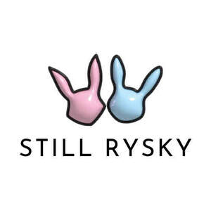

Trade Mark Journal No.2026/012 20 March 2026
UK00004352283 10 March 2026 (25,28)

a pink and a blue bunny with black outline with 'Still RYSKY' written under it.
- Class 25
- Bikinis; Swimwear; Swimsuits; Monokinis; Beachwear; Thong sandals; Tankinis; Strapless bras; Lingerie; Maternity lingerie; Fitted swimming costumes with bra cups; Strapless brassieres; Bodices [lingerie]; Bra straps; G-strings; Thongs; Underwear; Beach clothing; Maternity underwear; Briefs [underwear]; One-piece playsuits; Beach clothes; Bra straps [parts of clothing]; Boy shorts [underwear]; Bandeaux [clothing]; Swim shorts; Maillots [hosiery]; Straps for bras; Bras; Beach cover-ups; Underwear for women; Swim briefs; Halter tops; Bralettes; Maillots; Panties; Beach wraps; Sweat-absorbent underwear; Jogging bottoms [clothing]; Underwear (Anti-sweat -); Anti-sweat underwear; Sweat-absorbent underclothing [underwear]; Yoga bottoms; Bodysuits; Pajama bottoms; Sandals and beach shoes; Gym shorts; Dress pants; Trunks (Bathing -); One-piece suits; Romper suits; Bottoms [clothing]; Tank-tops; Bathing costumes; Sports bras; Jogging outfits; Tracksuit tops; Yoga tops; Undergarments; Shorts; Bathing suits; Suits (Bathing -); Playsuits [clothing]; Yoga pants; Beach robes; Blue jeans; Jogging bottoms; Leotards; Dress shirts; Women's underwear; Tops [clothing]; Clothing; Knitwear [clothing]; Jackets [clothing]; Ready-to-wear clothing; Linen clothing; Headbands [clothing]; Headbands for clothing; Gloves [clothing]; Gloves as clothing; Clothes; Jerseys [clothing]; Denims [clothing]; Shorts [clothing]; Cashmere clothing; Capes (clothing); Silk clothing; Leather clothing; Clothing of leather; Leather (Clothing of -); Collars [clothing]; Parts of clothing, footwear and headgear; Knitted clothing; Veils [clothing]; Windproof clothing; Hoods [clothing]; Corsets [clothing, foundation garments]; Embroidered clothing; Wristbands [clothing]; Belts [clothing]; Belts for clothing; Waterproof clothing; Casual clothing; Ready-made clothing; Clothing for leisure wear; Latex clothing; Sports clothing; Athletic clothing; Dance clothing; Heels; High-heeled shoes; Shoes; Sandals; Boots; Platform shoes; Dance shoes; Socks; Socks and stockings; Slipper socks; Ankle socks; Yoga socks; Sports socks; Stockings (Sweat-absorbent -); Stockings; Sweaters; Hosiery; Tights; Beanie hats; Underpants; Leg warmers; Leggings [leg warmers]; Ear warmers.
- Class 28
- Gym chalk for improving hand grip in sports activities.
Still RYSKY Ltd